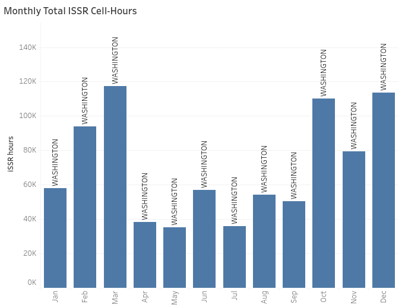
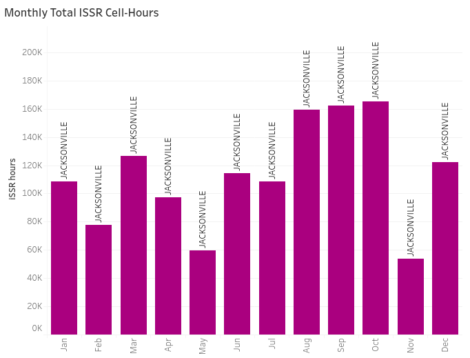
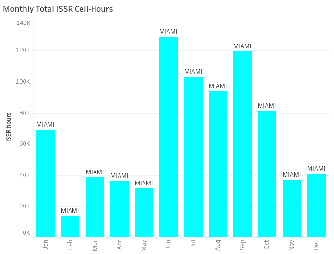
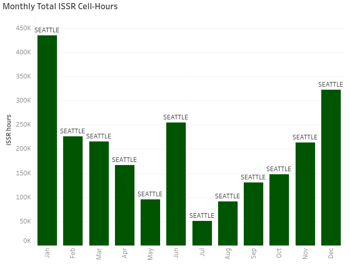

The fist ARTCC chosen was Washington, D.C. because it's monthly ISSR cell count trend closely followed the monthly trend
of all RAP and had the 3rd highest number of aircrafts transverse through the ISSRs. March 2021 had the highest monthly ISSR counts.
Jacksonville had the highest number of aicrafts tranverse through ISSRs throughout the year and its monthly ISSR celll count trend
was drastically different from the monthly trend of all RAP. October 2020 had the highest ISSR counts.
Miami, FL ARTCC's monthly ISSR cell count trend was also drastically different from the monthly trend of all RAP data. June 2020 had
the highest ISSR counts.
Seattle, WA ARTCC had the highest ISSR counts in January 2021 and this was chosen because it had the highest average ISSR Frequency per latitude and longitude coordinates
compared to the rest of the ARTTCs.

Monthly ISSR Distribution across Washington D.C.

Monthly ISSR Distribution across Jacksonville, FL.

Monthly ISSR Distrubiton across Miami, FL.

Monthly ISSR Distrubiton across Seattle, Washington.
MODEL FINDINGS
In XG Boost we updated the model to utilize data from FL 300-430. By implementing this range, we were no longer excluding data anomalies and this larger range compared to FL 300-370 allowed for more variance, which provided non-bias training data. We also built two different models for each of our four chosen ARTCCs – one that used 1 months' worth of training data, and the other that used 3 months’ worth of training data. Overall, using the longer range of training data improved our model performance, but not significantly. The models could predict most of the moderate values, but couldn’t capture the peak values accurately, especially if they are right after a trough.
Below are the results for each of the XGBoost models and some terminology for your reference.
Accuracy - Refers to how often the model correctly predicted the number of ISSR counts.
MAE (Mean Absolute Error) - Measures the magnitude of error between the predicted and original ISSR counts. It does this by using the average of the absolute error between the predicted and original ISSR counts.
Precision - Refers to the number of ISSR counts the model correctly estimated.